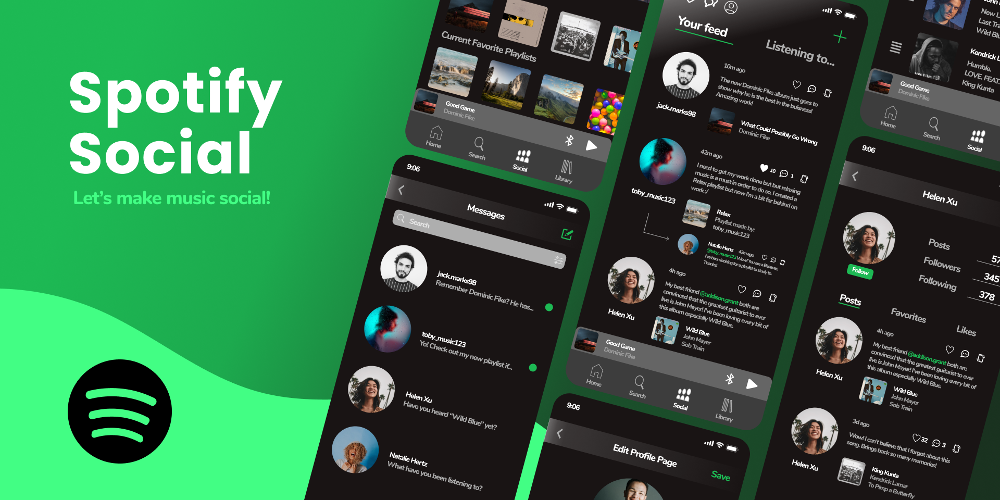

Let's talk about music!
For this project, I decided to do a case study on the Spotify app by designing a new Social Media aspect to Spotify. I gathered 5 of my family and friends that use Spotify and went through iterations of testings on the design by giving them tasks to complete and questions to answer.
Although Spotify has integrated with many other social media platforms, it was typically done by exiting a third-party app(e.g. Instagram). Instead it would be a lot easier for a user to be able to perform the same social actions within the Spotify app itself.
With the information that I gained through my participants combined with my research on how social media apps such as Instagram and Twitter implement these very user-friendly platforms, I was able to come up with a design that would increase the activity within the Spotify app.
Overall, I became more familiar with popular design features such as color, space, and visual hierarchy and it was very inspiring to work with participants as it helped me develop a better understanding of how effective feedback can be.